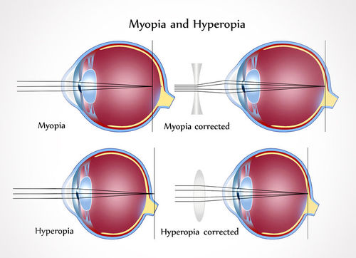

![Predict the focus before choosing the lens. A diverging correction helps the myopia model; a converging correction helps the hyperopia model. Dots indicate model focal positions.]()
In , or nearsightedness, distant objects are blurred because light focuses in front of the . An eyeball that is too long is one possible cause. A concave, or diverging, corrective spreads the incoming light slightly so the eye can focus it on the retina.
In , or farsightedness, light from nearby objects tends to focus behind the retina. An eyeball that is too short is one possible cause. A convex, or converging, corrective lens bends the incoming light inward before it enters the eye.
Use the location of the focal point to explain the correction. Do not choose a lens just because its name sounds familiar.

Begin with the upper-left eye. Follow the rays until they meet in front of the back surface, then continue: by the time they reach the retina they are spreading apart again. In the upper-right view, the concave lens changes their directions before they enter the same eye. They enter more spread out, so the combined system brings them together farther back, at the retina.
Now use the lower row as a worked contrast. Without correction, the rays have not yet met when they reach the retina; their projected meeting point is behind it. The convex lens first turns the entering rays inward. The eye then needs less additional convergence to bring them together at its retinal surface. The correction changes the incoming directions; it does not move the retina or repair a receptor. That is why focal position predicts the needed optical effect before you choose the lens name.